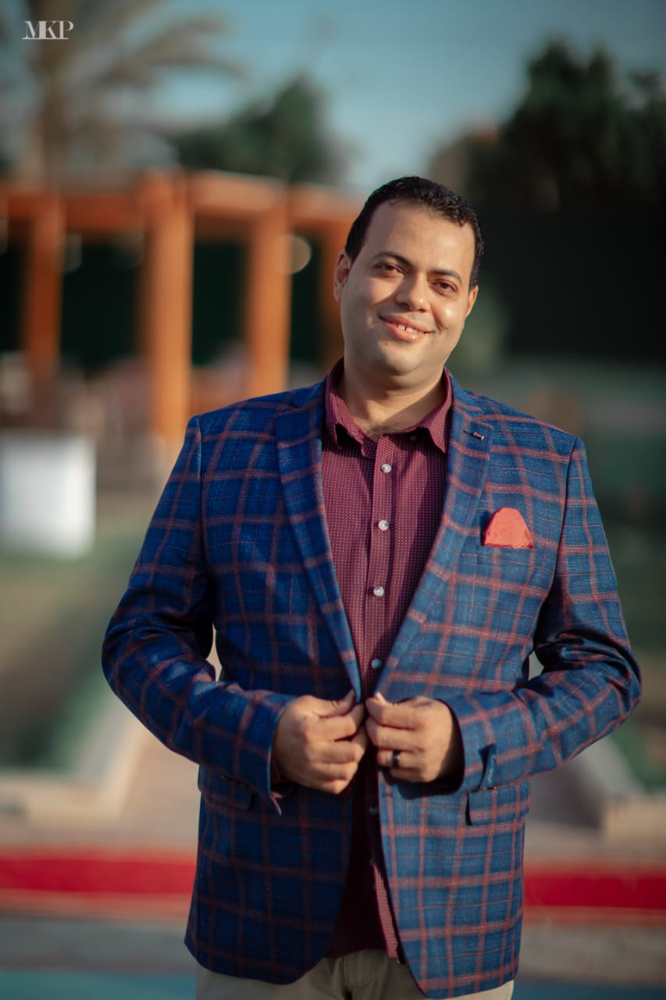
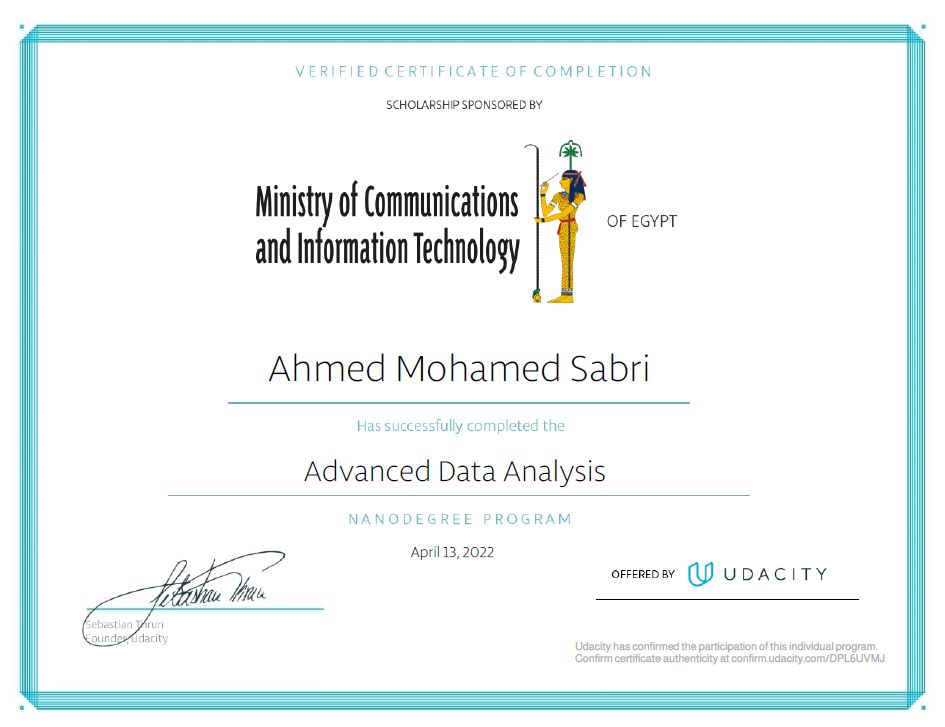
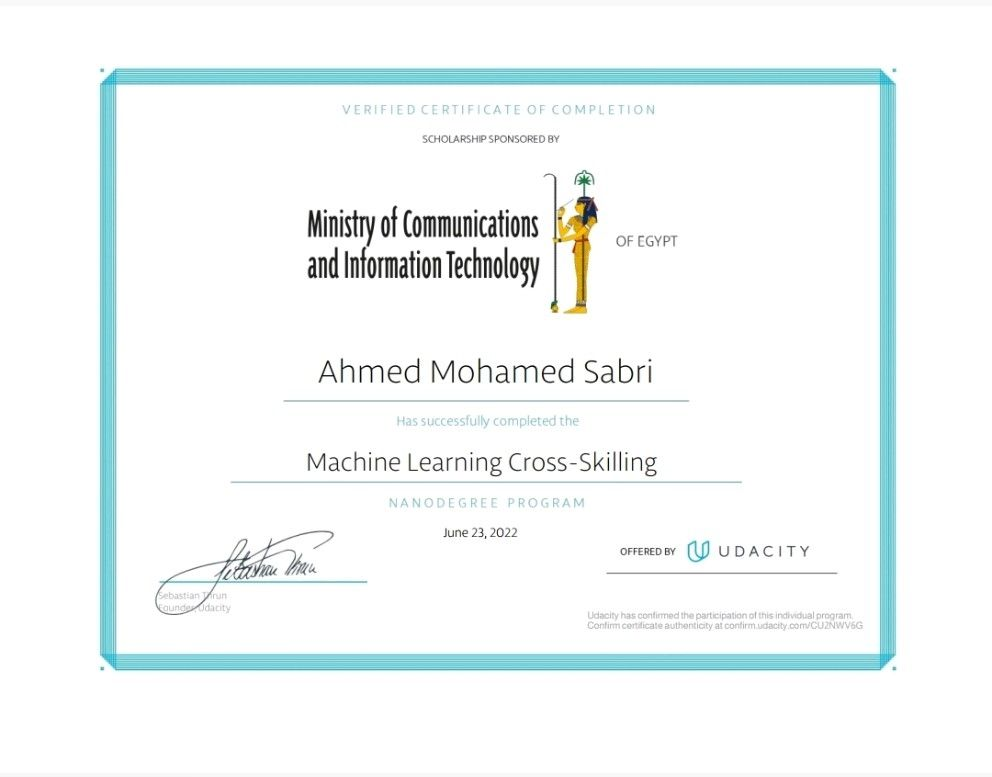
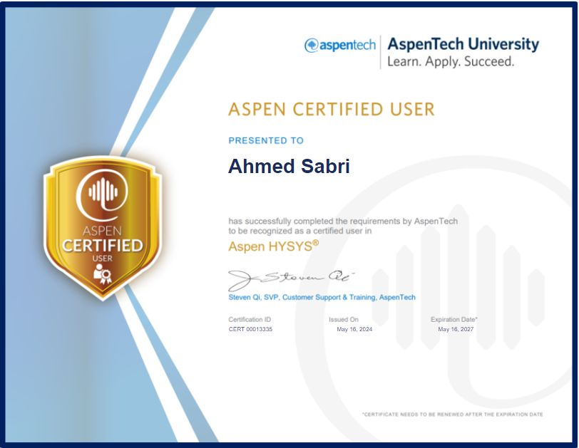
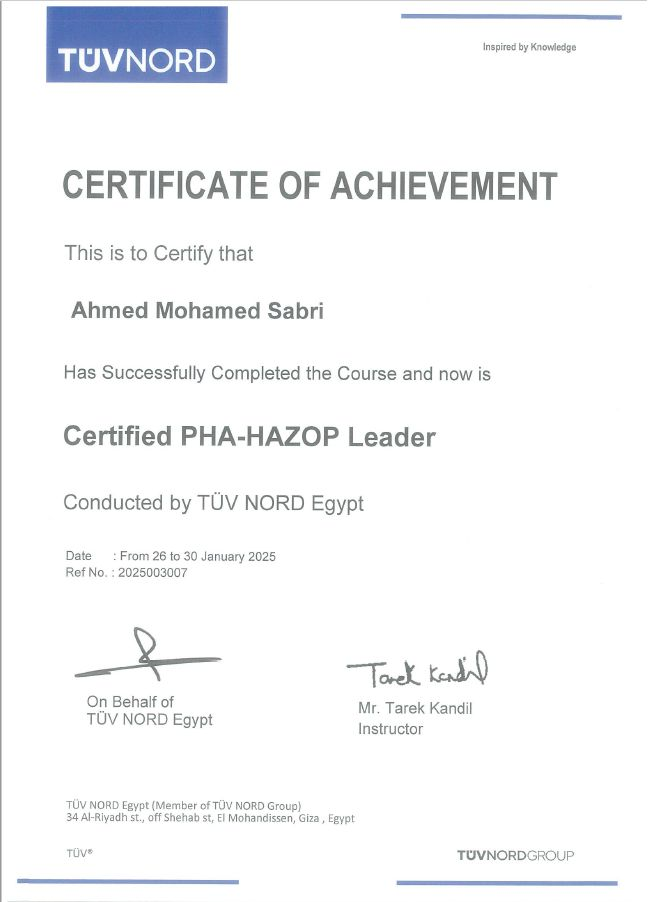

Process Engineering
17+ years in refinery operations, monitoring, and optimization.
Senior Process Engineer · 17+ Years in Refining
A senior process engineer with 17+ years across refinery units, optimization, advanced control, and process safety. The edge I bring: I build my own AI and software tools to make the engineering sharper and faster.

17+ years01 / About
I am a Senior Process Engineer with over 17 years at EPROM-MIDOR Refinery in Alexandria, Egypt. My core is hands-on refinery process engineering: Naphtha hydrotreating and splitting, reforming (Platformer-CCR), isomerization (Penex), kerosene and LPG Merox, light-ends treatment, and LPG recovery units.
On the floor, I have pushed the Platformer to 118% of nameplate capacity, cut turnaround nitrogen use by 50%, and led major expansion, troubleshooting, and energy-management work across the refinery. I hold a B.Sc. in Petrochemicals & Petroleum Refining Engineering from Suez Canal University, am a certified PHA-HAZOP leader (TÜV NORD), and am pursuing an MBA at Alexandria University.
What sets me apart is that I build my own tools. I led the development of the Smart Engine AI platform, a secure multi-module portal that replaces fragmented Excel tools with AI-driven calculations across six engineering modules, shown live at EGYPS as EPROM's flagship digital-transformation initiative. The goal was never software for its own sake; it was sharper, faster engineering.
On the side I also build free web tools for chemical and process engineers, covering unit conversion, gas properties, scatter plotting, and machine learning.
02 / Expertise
Deep refinery process engineering, with data and AI as force multipliers.
17+ years in refinery operations, monitoring, and optimization.
Advanced process control strategy, tuning, and optimization.
Certified PHA-HAZOP leader (TÜV NORD).
PRO/II, HYSYS, HTRI, and COMSOL modeling.
Python, pandas, NumPy, scikit-learn for engineering insight.
Machine learning models and GPT-based engineering tools.
Python, Streamlit, Dash, and Flask applications.
SQL, Tableau, Orange, and KNIME workflows.
03 / Impact
Optimization, troubleshooting, cost savings, and major projects across refinery units.
04 / The AI advantage
The same engineering, made sharper: a platform I conceived and built myself.
This is the advantage I bring as an engineer: I don't just use tools, I build them. Smart Engine AI is a company-wide engineering portal I conceived and built, replacing fragmented Excel tools with AI-driven calculations reaching 97-98% accuracy.
05 / Tools
Free browser tools I created to make day-to-day process engineering faster.
Interactive plotting for Excel and CSV with advanced visualization.
Try itFriendly ML tool for engineers with no prior experience needed.
Try itUpload Excel or CSV and get dynamic, comprehensive reports.
Try itPull tables from PDFs into downloadable CSV or Excel.
Try itUniversal converter supporting up to 3 combined units.
Try itDensity, molecular weight, Cp, Cv, and mass fraction of gases.
Try itAll tools live at amsamms.github.io/web_apps.
06 / Credentials

Udacity · Apr 2022
Download
Udacity · Jun 2022
Download
AspenTech · ID 00013335
Download
TÜV NORD · Ref 2025003007
Download
UOP / Callidus · 2020
Download07 / Contact
Open to process engineering, optimization and consulting, plus AI tooling for engineering teams.
Ahmedsabri1985@outlook.com{kind=link}
{kind=link}
{kind=link}
{kind=link}